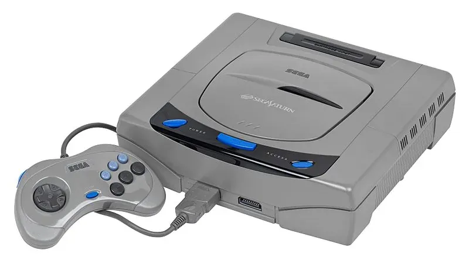

1994 年发布
Sega Saturn
双CPU架构 · 2D格斗王者 · 日本不错全球惨败
~926万
全球销量
双CPU
架构
CD
介质
¥44,800
日元价格
📖 历史与背景
1994年11月22日，世嘉在日本发布Saturn——比PS1还早几天。Saturn采用了双SH-2 32位RISC CPU架构（双核但非对称）和6个独立处理器，在2D图形能力上非常强悍——Saturn的2D格斗游戏移植效果无人能敌。
然而Saturn的3D性能是致命的短板——因为双CPU架构导致3D编程极其复杂（开发者需要手动分配任务到两颗CPU上），而且Saturn没有专用的3D几何处理器，3D多边形性能被PS1完爆。
世嘉在Saturn上犯了一系列战略错误：提前四个月在美国发售（搞得首发游戏极少）、定价$399高于PS1的$299、以及复杂的开发环境让第三方望而却步。Saturn全球仅售出926万台——世嘉的惨败。
⚙️ 硬件规格
CPU
双SH-2 32位 RISC (28.6MHz×2)
GPU
SCU + VDP1/VDP2
内存
2MB RAM + 1.5MB VRAM
色彩
同屏1,670万色
光驱
2倍速CD-ROM
音效
32通道PCM + SCSP DSP
扩展
扩展槽（MPEG卡/记忆卡）
手柄
6键+两个肩键
🎮 经典游戏
VF战士2
1995
3D格斗始祖移植
街霸Zero 3
1998
2D格斗，Saturn版最强
樱花大战
1996
恋爱+SLG，日本国民级IP
守护英雄
1996
财宝社横版动作巅峰
恶魔城：月下夜想曲
1997
SS版新增角色玛丽亚
KOF 97
1997
SS上的格斗王者
💡 趣闻
- Saturn当时被中国玩家称为"土星"——但其实Saturn的拉丁文是"农神"，和土星没什么关系
- 萨克的RAM扩展卡（1MB/4MB）是格斗游戏的福音——插上4MB卡后，街霸Zero 3/Super可以读取无需加载
- Saturn在日本有专属的"水晶版"（Derby对应）等限定版主机，至今仍被收藏家追捧